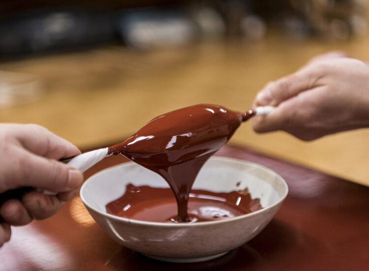
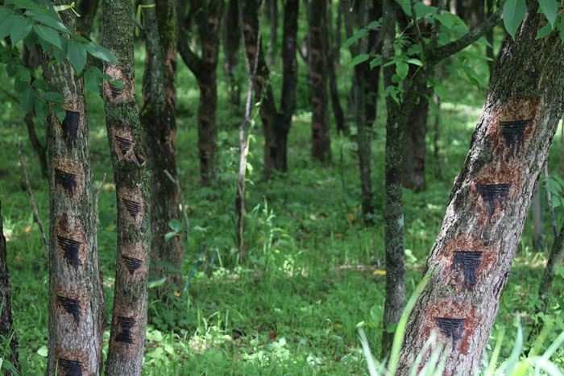
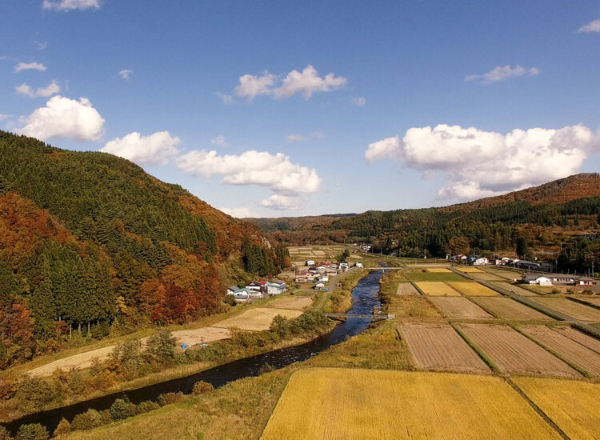
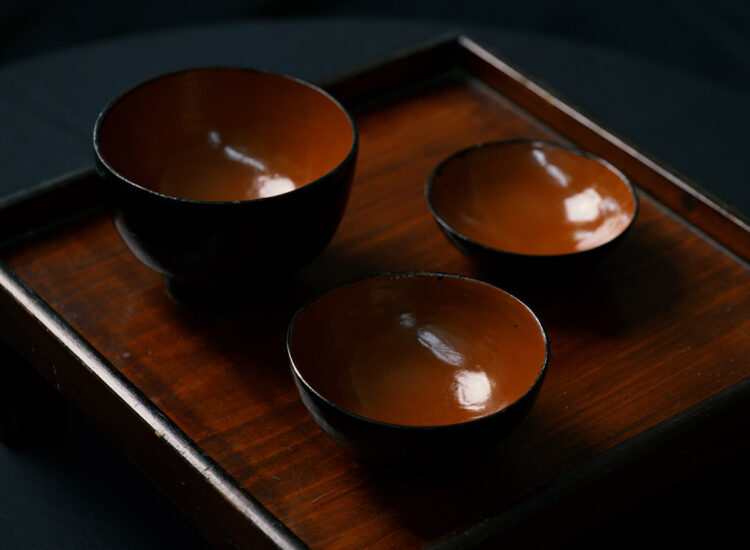
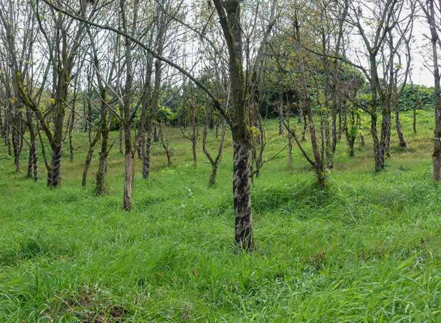
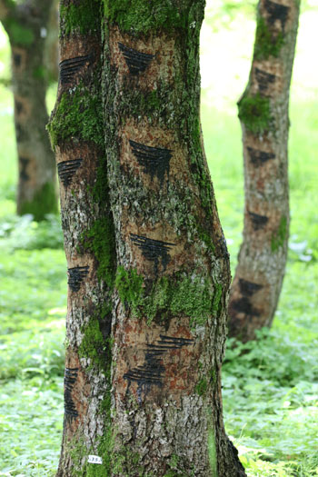
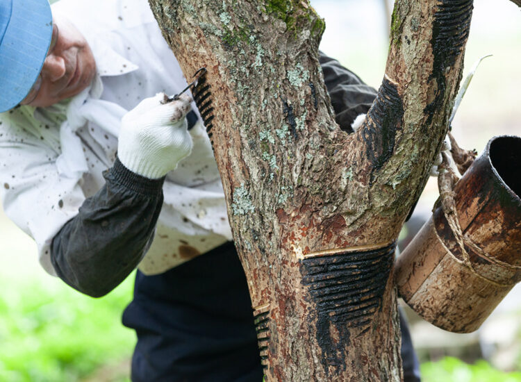
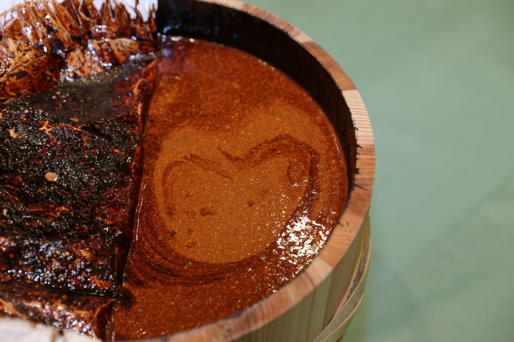
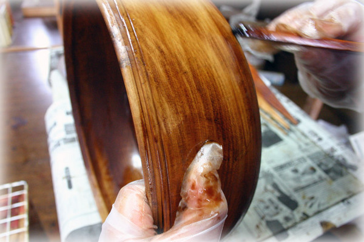
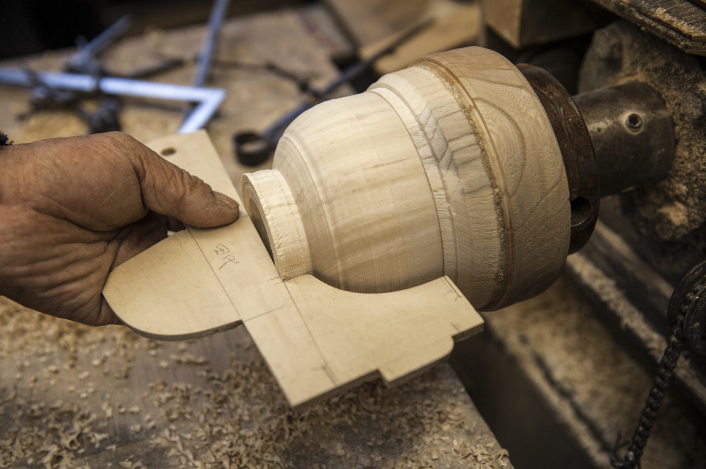
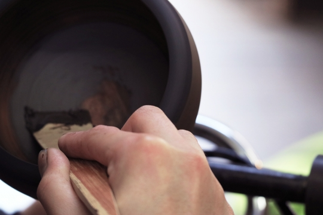
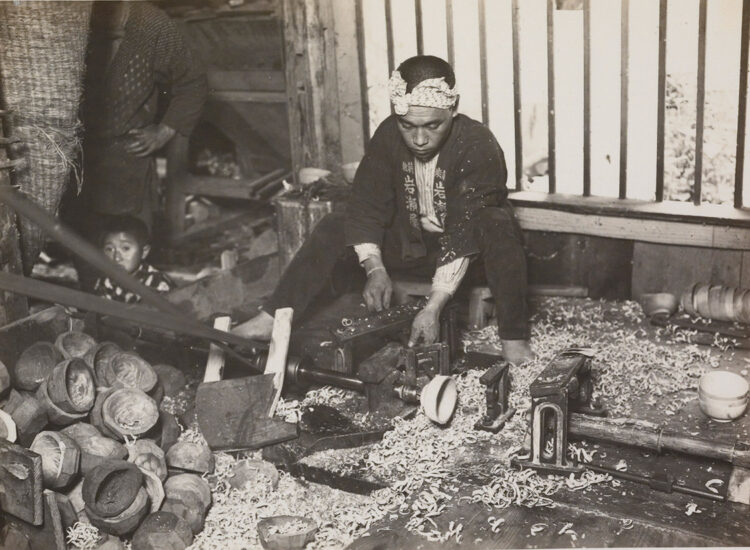
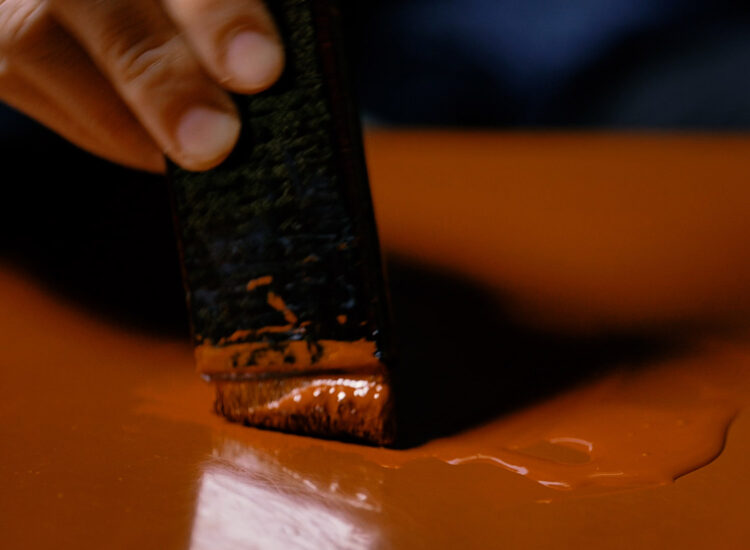
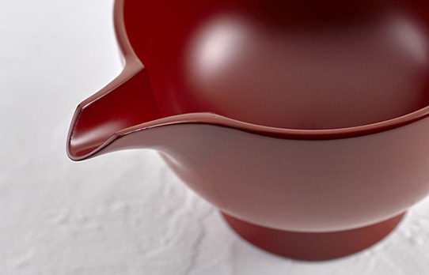
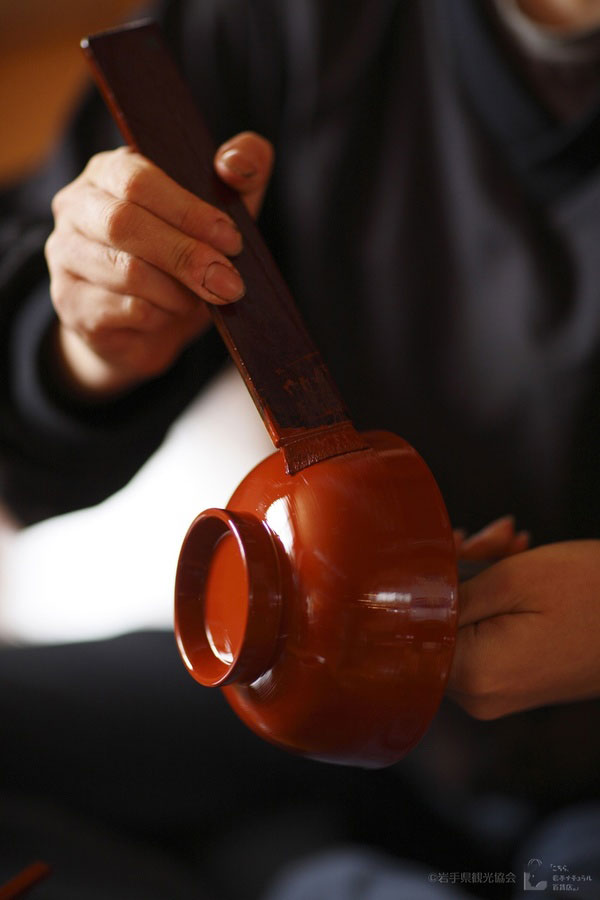
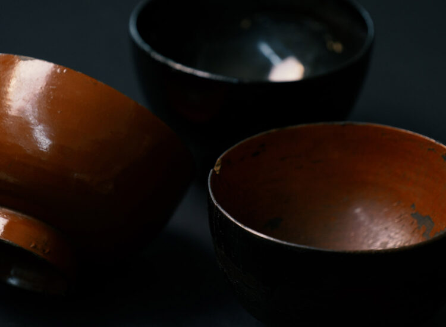
Joboji
Process
Living
Future
浄法寺
工程
生活
未来
漆の國、浄法寺
The allure of lacquerware lies not merely in its beauty.
It is a
quiet and enriching experience in itself, one that allows you to feel
the seasons, the passage of time, and the activities of people every
time you hold it in your hands. It deepens with use, growing alongside
your life. Lacquerware is a mirror reflecting time, a small work of art
that envelops our daily lives.
漆器の魅力とは、美しさだけではない。
それは手に取るたびに季節を感じ、時間を感じ、人の営みを感じることのできる、静かで豊かな体験そのものなのである。使うほどに深まり、暮らしと共に育つ。漆器とは、時を映す鏡であり、日々を包む小さな芸術なのだ。
scroll ▶
The origins of Joboji lacquerware are said to lie in the production of lacquer used in the construction and restoration of temples built during the Kamakura period. In the Joboji region, lacquer trees have been cultivated since ancient times, and lacquer tapping techniques developed. Later, the production of lacquerware using the harvested lacquer took root as a local industry, and it became a familiar everyday item.
In Joboji, nestled in the northern mountains, lacquer trees grow in a quiet forest. A single drop of lacquer, harvested over many years, is transformed into vessels by the hands of artisans, and passed down through generations along with the local culture and traditions.
特徴
浄法寺塗の特別さは、器を塗る技だけでなく、その漆を育み採る営みまでが同じ土地に息づいていることにある。岩手の森で採られた一滴の漆は、職人の手によって幾度も塗り重ねられ、静かな艶を宿す器へと姿を変える。漆を採る人と塗る人、その技が一つの地域で受け継がれてきた風景は全国でも稀であり、浄法寺塗は土地そのものの物語を映した漆器なのである。
Features
The uniqueness of Joboji lacquerware lies not only in the technique of applying the lacquer to the vessels, but also in the fact that the entire process of cultivating and harvesting the lacquer is rooted in the same land. A single drop of lacquer harvested from the forests of Iwate is repeatedly applied by the hands of craftsmen, transforming it into a vessel imbued with a quiet luster. The sight of the lacquer harvesters and the lacquerers, and the techniques passed down within the same region, is rare throughout Japan, and Joboji lacquerware reflects the story of the land itself.
御山御器
浄法寺塗に古くから伝わる三つ椀。
大・中・小の椀を重ねて収納できる実用的な器であり、日々の食卓とともに受け継がれてきた。簡素な造形の中に、国産漆の深い艶と確かな手仕事が息づいている。
一本の漆の木から
採れる漆はわずか200gほど
Beauty is in utility
美は用の中にある
Index
目次